Cuidado profissional para a saúde e beleza da cabeça aos pés
Atendimento humanizado e especializado em podologia, estética e bem-estar em Piraquara.
Agendar HorárioServiços e Benefícios
Conheça nossos tratamentos especializados para cuidar da sua saúde e beleza.
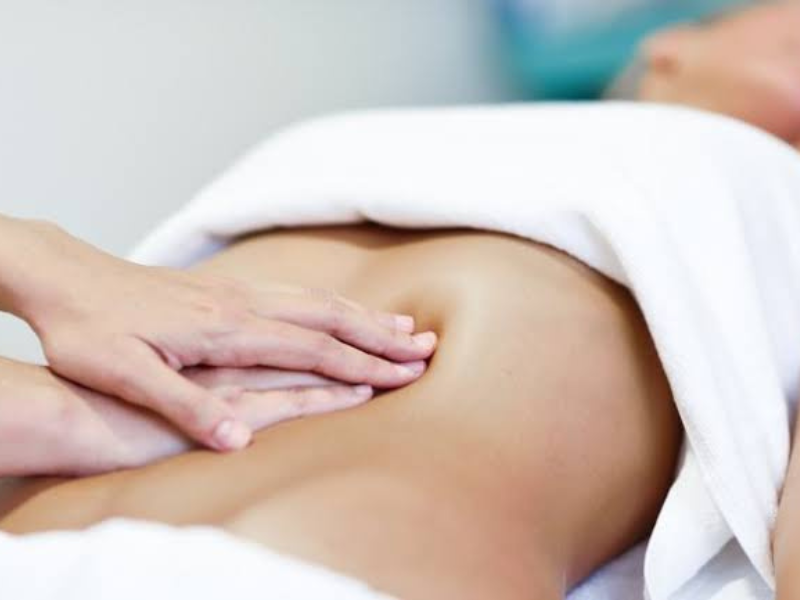
Massoterapia Terapêutica e Estética
Massagem Modeladora
A massagem modeladora é um tratamento corporal que utiliza manobras intensas, rápidas e profundas para auxiliar na redução de medidas, melhorar o contorno corporal e ativar a circulação sanguínea.
Ela ajuda a combater a gordura localizada, estimula o metabolismo e contribui para a melhora da textura da pele, deixando-a mais firme e uniforme.
- Redução de medidas e gordura localizada
- Melhora do contorno corporal
- Ativação da circulação sanguínea
- Estímulo do metabolismo
- Melhora da textura e firmeza da pele
Drenagem Linfática
A drenagem linfática é uma técnica de massagem suave e ritmada que estimula o sistema linfático, auxiliando na eliminação de líquidos retidos e toxinas do organismo.
Ela ajuda a reduzir inchaços, melhorar a circulação, aliviar a sensação de pernas cansadas e promover relaxamento profundo.
Indicações: Pós-operatório, gestação (com liberação médica), retenção de líquidos, edemas ou cansaço corporal.
- Eliminação de líquidos retidos e toxinas
- Redução de inchaços e edemas
- Melhora da circulação sanguínea
- Alívio da sensação de pernas cansadas
- Promove relaxamento profundo e bem-estar
Ventosa
A ventosaterapia utiliza ventosas para estimular a circulação sanguínea, aliviar tensões musculares e dores localizadas.
A técnica auxilia na liberação de toxinas, melhora da oxigenação dos tecidos e relaxamento muscular.
- Estimulação da circulação sanguínea
- Alívio de tensões e dores musculares
- Liberação de toxinas acumuladas
- Melhora da oxigenação dos tecidos
- Promove relaxamento muscular profundo
Bambu Terapia
A bambu terapia é uma técnica de massagem que utiliza hastes de bambu para promover relaxamento, modelagem corporal e ativação da circulação.
Ela ajuda a reduzir tensões, melhorar o contorno corporal e proporcionar sensação de bem-estar.
- Promove relaxamento profundo
- Auxilia na modelagem corporal
- Ativa a circulação sanguínea
- Reduz tensões musculares
- Proporciona sensação de bem-estar
Massagem Pós-Cirúrgica
A massagem pós-cirúrgica é indicada para auxiliar na recuperação após procedimentos cirúrgicos, respeitando sempre a liberação médica.
Ela ajuda a reduzir inchaços, prevenir fibroses, melhorar a circulação e acelerar o processo de recuperação, promovendo conforto e bem-estar.
Importante: Respeitando sempre a liberação médica para iniciar o tratamento.
Massagem Relaxante
A massagem relaxante é uma técnica que utiliza movimentos suaves e contínuos para aliviar tensões musculares, reduzir o estresse e promover um profundo estado de relaxamento físico e mental.
Ela melhora a circulação sanguínea, diminui dores causadas pelo dia a dia e contribui para o equilíbrio do corpo e da mente.
Ideal para: Quem busca momentos de cuidado, descanso e bem-estar. Ajuda a melhorar a qualidade do sono, reduzir a ansiedade e renovar as energias.
Massagem Terapêutica
A massagem terapêutica é uma técnica voltada para o alívio de dores musculares, tensões e desconfortos físicos causados pelo estresse, má postura ou esforço repetitivo.
Por meio de manobras específicas e direcionadas, ela atua profundamente na musculatura, promovendo relaxamento, melhora da circulação e recuperação funcional do corpo.
Indicações: Pessoas que sofrem com dores nas costas, pescoço, ombros, lombar ou fadiga muscular, contribuindo para o bem-estar, mobilidade e qualidade de vida.
Detox Corporal
O detox corporal é um tratamento que auxilia na eliminação de toxinas acumuladas no organismo, promovendo equilíbrio, leveza e bem-estar.
Por meio de técnicas específicas e ativos naturais, ele estimula a circulação, ativa o sistema linfático e contribui para a redução do inchaço e da retenção de líquidos.
- Eliminação de toxinas acumuladas
- Promove equilíbrio e leveza corporal
- Estimula a circulação e sistema linfático
- Reduz inchaço e retenção de líquidos
- Melhora o funcionamento do corpo
- Proporciona pele mais viçosa e renovação energética
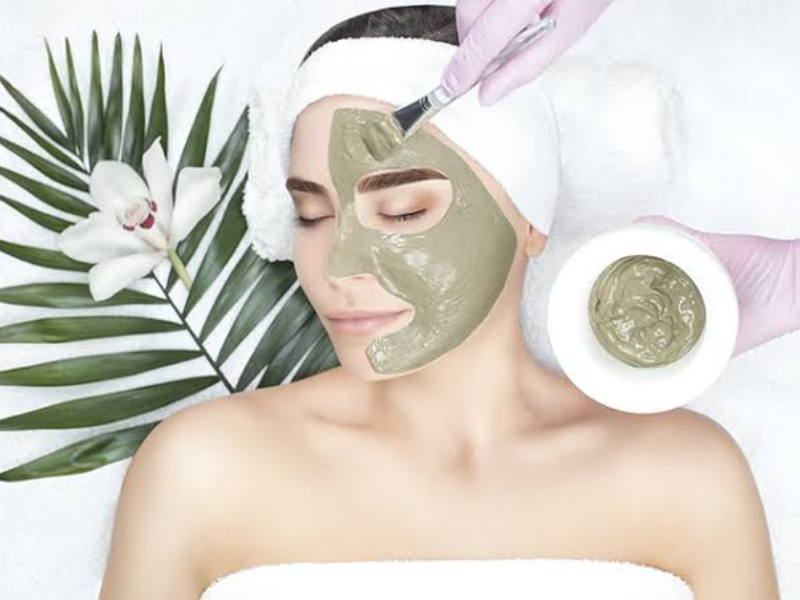
Estética Facial e Corporal
Remoção de Verrugas
A remoção de verrugas é realizada de forma segura, visando eliminar a lesão e aliviar desconfortos causados pelo atrito ou dor.
O procedimento ajuda a prevenir a disseminação da verruga e melhora a saúde e o conforto da pele, sempre respeitando a avaliação profissional.
Limpeza de Pele
A limpeza de pele é um tratamento facial essencial para remover impurezas, oleosidade excessiva, células mortas e cravos.
Ela promove a desobstrução dos poros, melhora a textura da pele e auxilia na prevenção de acne, deixando o rosto mais limpo, saudável e revitalizado.
Microagulhamento
O microagulhamento é um procedimento estético que utiliza microagulhas para estimular a produção natural de colágeno e elastina.
Ele auxilia na redução de manchas, linhas finas, cicatrizes de acne e melhora a textura e firmeza da pele, além de potencializar a absorção de ativos.
Peeling Químico
O peeling químico consiste na aplicação de ácidos específicos para promover a renovação celular da pele.
Ele ajuda a clarear manchas, controlar a oleosidade, suavizar linhas de expressão e melhorar o viço, proporcionando uma pele mais uniforme e renovada.
Hidragloss
O hidragloss é um tratamento labial que promove hidratação profunda, revitalização e realce da beleza natural dos lábios.
Ele melhora o aspecto de lábios ressecados, suaviza linhas finas e proporciona maciez, brilho e aparência saudável, sem procedimentos invasivos.
Depilação a Laser
A depilação a laser é um método moderno e eficaz para a redução progressiva dos pelos, atuando diretamente no folículo piloso.
O procedimento proporciona pele mais lisa, macia e com menos irritações, sendo indicado para diferentes tipos de pele e regiões do corpo.
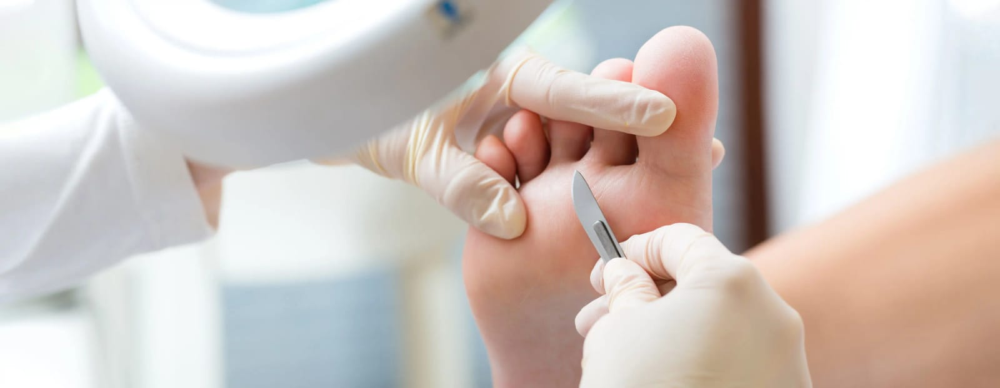
Podologia
Unha Encravada
O tratamento de unha encravada é realizado de forma segura e eficaz para aliviar a dor, inflamação e desconforto causados pelo crescimento incorreto da unha.
O procedimento promove o alívio imediato, previne infecções e orienta sobre os cuidados necessários para evitar recorrências.
Reflexologia Podal
A reflexologia podal é uma técnica terapêutica que estimula pontos específicos dos pés relacionados a diferentes órgãos e sistemas do corpo.
Ela promove relaxamento profundo, alívio do estresse, equilíbrio energético e bem-estar geral.
Podoprofilaxia
A podoprofilaxia é o cuidado preventivo dos pés, indicado para manter a saúde e a higiene podal.
O procedimento inclui corte técnico das unhas, remoção de excessos de cutículas, calosidades e limpeza geral, prevenindo problemas futuros e proporcionando conforto.
Calos e Calosidades
O tratamento de calos e calosidades visa remover o espessamento da pele causado por pressão ou atrito excessivo.
O procedimento alivia dores, melhora a pisada e devolve o conforto e a maciez aos pés, prevenindo o reaparecimento.
Podopediatria
A podopediatria é o cuidado especializado com os pés das crianças, realizado de forma delicada e segura.
O atendimento auxilia na prevenção e no tratamento de alterações nas unhas e na pele, garantindo o desenvolvimento saudável e confortável dos pés desde os primeiros anos.
Indicado para crianças de 0 a 12 anos
Podogeriatria
Atendimento especializado em idosos para cuidados com a saúde podal na terceira idade, considerando as necessidades específicas dessa fase da vida.
Fissuras
O tratamento de fissuras consiste no cuidado das rachaduras na pele dos pés, especialmente nos calcanhares.
Ele promove hidratação profunda, cicatrização e alívio da dor, prevenindo infecções e melhorando o aspecto da pele.
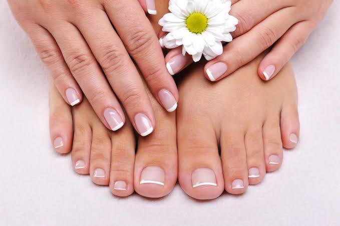
Nail Designer
Blindagem em Gel
A blindagem em gel é um procedimento que fortalece as unhas naturais, criando uma camada protetora que aumenta a resistência e durabilidade.
Ideal para unhas frágeis ou quebradiças, proporciona brilho, proteção e aspecto saudável.
Soft Gel
O soft gel é uma técnica de alongamento de unhas com tips pré-moldadas em gel, oferecendo praticidade, leveza e acabamento natural.
Proporciona unhas resistentes, elegantes e com rápida aplicação.
Molde F1
O molde F1 é uma técnica de alongamento que utiliza moldes para criar unhas sob medida, com formato e comprimento personalizados.
Oferece resistência, sofisticação e um resultado natural, adaptado ao estilo de cada cliente.
Manicure e Pedicure Tradicional
O serviço de manicure e pedicure tradicional cuida da saúde e beleza das mãos e pés, incluindo corte, lixamento, cuidado das cutículas e esmaltação.
Proporciona higiene, conforto e bem-estar no dia a dia.
SPA dos Pés
O SPA dos pés é um tratamento relaxante e revitalizante que promove cuidado profundo e bem-estar.
Inclui higienização, esfoliação, hidratação intensa e massagem, aliviando o cansaço e deixando os pés macios e renovados.
SPA das Mãos
O SPA das mãos é um tratamento completo que promove cuidado, relaxamento e revitalização da pele.
Inclui higienização, esfoliação, hidratação profunda e massagem relaxante, ajudando a combater o ressecamento e devolver maciez e suavidade às mãos.
Ideal para: Quem busca mãos bem cuidadas, nutridas e com aparência saudável, proporcionando bem-estar e um momento especial de autocuidado.
Atenção: Protocolos com ou sem equipamentos para estética corporal. Entre em contato e saiba qual o melhor protocolo para você!
Depoimentos
Veja o que nossos clientes dizem sobre nossos serviços.
Maria Silva
"Atendimento excelente! A Aline é muito profissional e cuidadosa. Minhas unhas estavam muito encravadas e com dor, ela resolveu tudo com muita técnica e carinho. Recomendo muito!"
Joana Santos
"Fiz a massagem modeladora e estou amando os resultados! Já percebi redução de medidas e minha pele está muito mais firme. O ambiente é muito limpo e agradável. Voltarei com certeza!"
Carla Mendes
"O SPA dos pés é maravilhoso! Saí de lá renovada, com os pés macios e sem nenhum calo. A equipe é super atenciosa e o ambiente transmite paz. Já indiquei para todas minhas amigas!"
Galeria
Conheça um pouco do nosso espaço e alguns de nossos serviços.
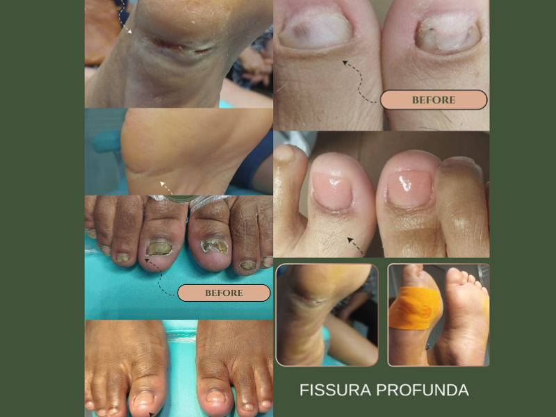
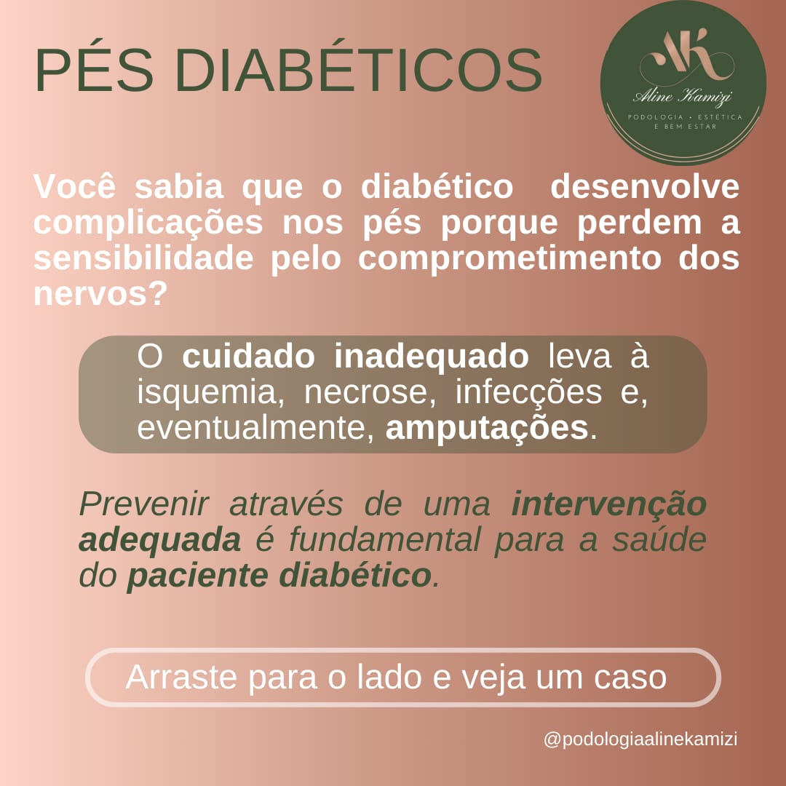
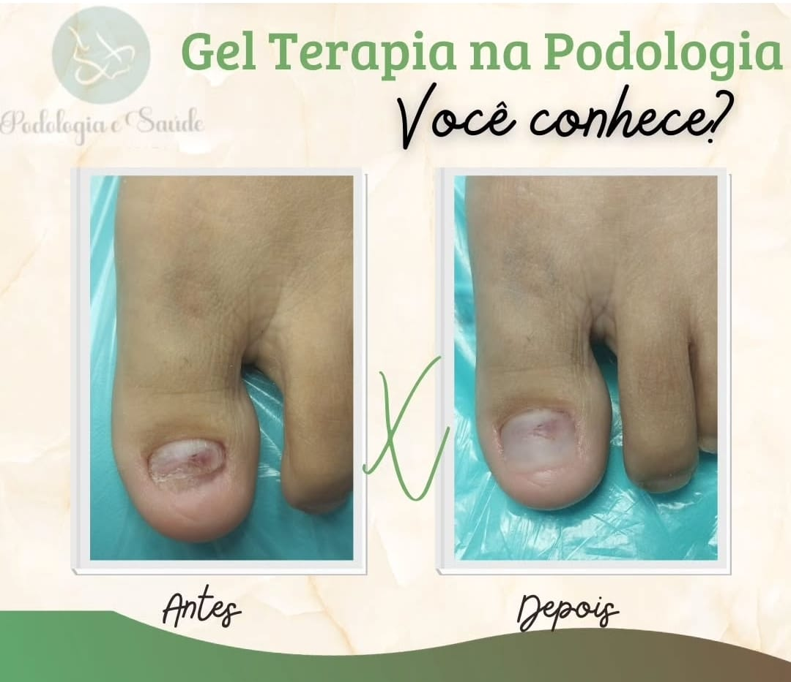
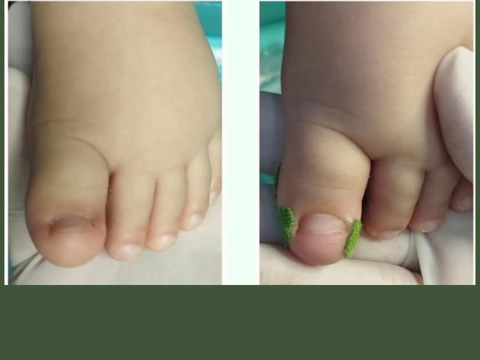
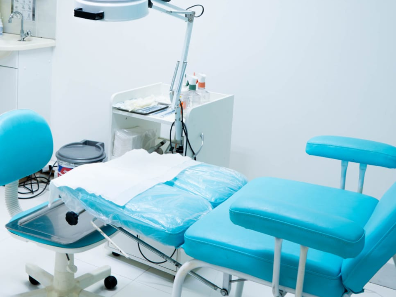
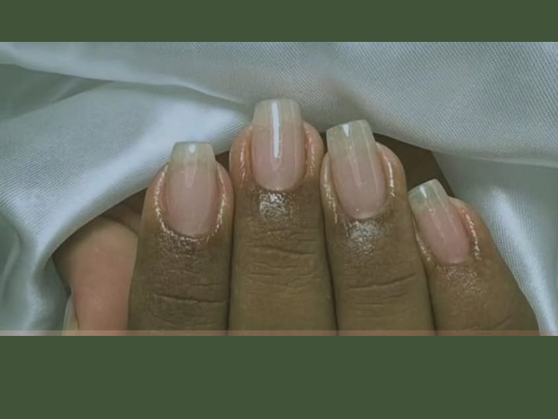
Sobre Nós
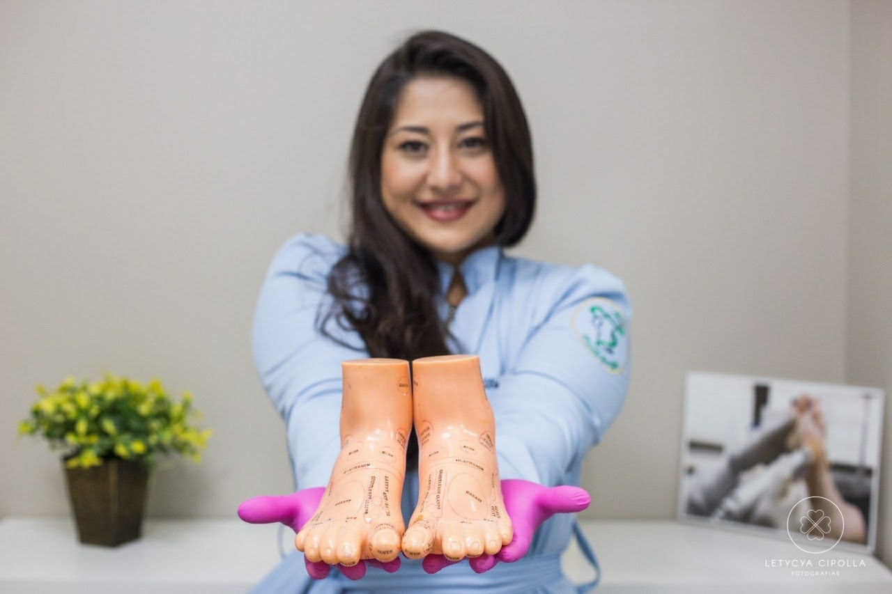
Aline Kamizi – Podologia, Estética e Bem-Estar
Localizada em Piraquara, a clínica Aline Kamizi – Podologia, Estética e Bem-Estar é um espaço dedicado à excelência no cuidado com a saúde, a beleza e a qualidade de vida. Atuamos com alto padrão de profissionalismo, rigor em higiene e atendimento humanizado, oferecendo uma experiência segura, acolhedora e personalizada.
Sob a direção da podóloga Aline Kamizi, profissional com ampla experiência e constante aprimoramento, a clínica conta com uma equipe multidisciplinar altamente qualificada nas áreas de massoterapia, nail designer e estética facial e corporal. Essa integração de especialidades permite tratamentos completos, eficazes e alinhados às necessidades individuais de cada cliente.
Cada atendimento é conduzido com técnica, ética e atenção aos detalhes, refletindo nosso compromisso com resultados, bem-estar e excelência em cada etapa do cuidado.
Missão
Promover saúde, beleza e bem-estar por meio de atendimentos especializados, unindo técnica, cuidado humanizado e excelência profissional.
Visão
Ser referência em podologia, estética e bem-estar em Piraquara e região, reconhecida pela qualidade dos serviços e experiência diferenciada.
Profissionalismo e Ética
Conduta ética em todos os atendimentos e procedimentos.
Excelência e Qualidade
Compromisso com a alta qualidade em todos os serviços oferecidos.
Higiene e Segurança
Rigor nos protocolos de higiene e segurança para seu bem-estar.
Atendimento Humanizado
Cada cliente recebe atenção personalizada e acolhimento.
Compromisso com Resultados
Foco em entregar resultados satisfatórios para cada cliente.
Respeito e Bem-Estar
Valorizamos o respeito e promovemos o bem-estar integral do cliente.
Contato
Entre em contato para agendar seu horário ou tirar dúvidas.
Entre em Contato Conosco
Estamos prontos para atendê-lo com excelência e cuidado. Agende seu horário através dos nossos canais de contato!
Endereço
Rua Pastor Adolfo Weidmann, 736
Piraquara - PR
aline.kamiz@gmail.com
Horário de Funcionamento
Segunda a Sexta:
10h às 21h
Sábado:
10h às 19h
Atendimento somente com horário agendado.